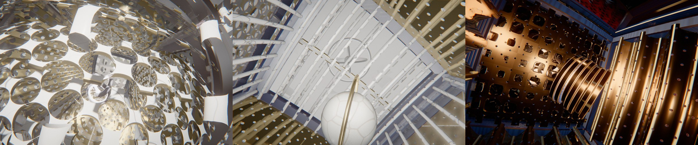

01Un patron est un arbre de charnières
src/math4.js · hinge(), unfoldTransforms(), validNet()Un cube se déplie en six carrés posés à plat. L’hypercube, ou tesseract, se déplie de même en huit cubes posés dans l’espace. En coordonnées, le tesseract est \([-1, 1]^4\). Ses huit cellules sont des cubes, repérées par leur normale \(\pm e_k\), la direction qui sort de chaque cube. Deux cellules partagent un carré, sauf si elles sont opposées. Chaque pièce de la scène (barres, panneaux, verre, objet exposé) est construite une seule fois, en coordonnées locales \(l \in [-1,1]^3\) de sa cellule, puis plongée dans l’espace à quatre dimensions par une matrice \(4\times4\) recalculée à chaque image.
Déplier, c’est faire pivoter chaque cellule autour du carré qu’elle partage avec sa voisine. Un patron est donc un arbre couvrant des huit cellules : un réseau de charnières qui les relie toutes sans former de boucle, enraciné dans la cellule \(-W\). Une charnière entre un parent \(p\) et une cellule \(c\) est une rotation dans le plan de leurs deux normales, autour du centre du carré commun \(h = n_p + n_c\). La transformation d’une cellule est celle de son parent composée avec sa propre charnière :
\(R_\theta\) porte \(-n_p\) vers \(n_c\). À \(\theta = 0\), la cellule est à sa place dans l’hypercube. À \(\theta = \pi/2\), elle est couchée dans l’hyperplan de son parent. De proche en proche, toutes les cellules finissent dans l’hyperplan \(w = -1\), où la projection se réduit à un changement d’échelle : on voit huit cubes posés à plat.
Tous les arbres ne sont pas des patrons : deux cellules peuvent tomber au même endroit une fois dépliées. Un patron tiré au hasard (en croix autour du socle, en serpent, ou libre) est donc vérifié : on déplie, on arrondit les centres, on refuse tout doublon et tout centre hors de \(w = -1\), et l’on retire jusqu’à 500 fois. Il existe 261 patrons du tesseract à symétrie près. La croix du Corpus Hypercubus de Dalí en est un, codé à part.
hinge, unfoldTransforms, randomNet et project sont importées telles quelles de math4.js. Réglez l’angle θ pour plier et déplier, et tirez un autre patron avec les boutons. Toutes les charnières ont ici le même angle. Dans la scène, elles se ferment tour à tour, les feuilles de l’arbre d’abord, avec anticipation et rebond. En or, le socle \(-W\). Faites glisser pour tourner la vue.02La boucle se referme par construction
src/math4.js · moveMatrix(), randomMoves(), randomTour()Une fois plié, l’hypercube tourne d’un quart de tour dans un plan qui contient \(w\) : la cellule la plus éloignée de l’œil 4D (le cube du centre de l’image) passe sur le côté, une voisine prend sa place. Ce « mouvement » peut être doublé d’un quart de tour simultané dans le plan orthogonal (une rotation dite isocline), ce qui ajoute un roulis. Cela fait dix-huit mouvements, six simples et douze doubles, et chacun est une symétrie de l’hypercube : sa matrice est une permutation signée, un seul \(\pm1\) par ligne, ce qu’un test vérifie.
Cette propriété rend la boucle parfaite sans aucun raccord. Après un mouvement, l’hypercube occupe exactement la même place. On peut donc le déplier selon le même patron, aux mêmes emplacements, garni d’autres cellules : l’emplacement de la cellule \(c\) est \(Q\,n_c\), où \(Q\) est le produit des mouvements déjà faits. Il suffit que la suite de mouvements ait pour produit l’identité pour que chaque cellule ait retrouvé sa place à la fin :
La cellule intérieure se lit directement sur \(Q\) : c’est celle dont la normale va vers \(-e_w\), soit \(n_c = Q^\top(-e_w)\), l’opposée de la dernière ligne de \(Q\). Par défaut, la séquence est un tour de quatre pièces : quatre mouvements qui font passer le cube intérieur par quatre cellules distinctes, une fois chacune, avant de revenir à la première. Une recherche en profondeur l’obtient. Elle essaie les mouvements dans un ordre tiré de la graine, interdit les cellules déjà visitées et exige que le dernier mouvement soit l’inverse exact du produit des précédents (budget : 50 000 nœuds). Environ une graine sur deux donne une ligne droite, quatre quarts de tour sur le même grand cercle. Le tour complet fait de même avec huit mouvements et les huit cellules.
randomMoves (importée de math4.js, avec le générateur de la scène). Chaque étape tient un instant puis tourne. Les boutons tirent une boucle de quatre pièces, une ligne droite dans un seul plan, le tour complet ou une autre graine ; le curseur parcourt la boucle. La couleur des arêtes est leur coordonnée \(w\), froide loin de l’œil 4D, chaude tout près, comme sur l’ossature de la scène. Le cube intérieur est tracé en trait épais. Le bandeau du bas suit la pièce occupée : la dernière flèche ramène toujours à la première. Ici la boucle reste pliée. Dans la scène, chaque étape déplie et replie le patron.Plié, chaque arête de l’hypercube est partagée par trois cellules et chaque sommet par quatre : huit ossatures complètes s’y empileraient. À la fin du pliage, seule la cellule extérieure, projetée en cube sans déformation, garde ses barres. Celles des autres se rétractent dans leurs axes, par un seul uniforme. Pendant un quart de tour, le contour passe d’une cellule à l’autre.
03Une projection 4D par sommet, et sa jacobienne exacte
src/scene/project.js · mapPoint(), projectWithJacobian()Toute la géométrie est stockée en 3D dans des tampons ordinaires. Le vertex shader, le programme que la carte graphique exécute pour chaque sommet, la porte en 4D puis la ramène en 3D. La formule fait trois choses : placer le point en 4D, le pousser éventuellement vers une sphère, puis le projeter en perspective. Pour un point local \(l\) d’une pièce, avec \(A\) la matrice de sa cellule (plongement, dépliage, rotation 4D, rotation de l’objet exposé) :
Le premier temps est un gonflement facultatif vers la 3-sphère de rayon 2 : à \(g = 0\) les arêtes restent droites, à \(g = 1\) chaque point est poussé sur la sphère et les arêtes deviennent des arcs (les barres sont subdivisées pour pouvoir se courber). Le second est une perspective depuis l’œil 4D \((0, 0, 0, d)\), avec \(d\) tiré entre 2,6 et 3,6. Le dénominateur est borné à 0,05 : une cellule qui passe tout près de l’œil grandit beaucoup, mais ne traverse pas l’infini.
L’éclairage a besoin de normales, et une projection non linéaire ne transporte pas une normale comme une position. Il faut la jacobienne \(J = \partial p / \partial l\), la matrice qui dit comment un petit déplacement de la pièce devient un déplacement à l’écran, et appliquer sa matrice des cofacteurs, qui garde la normale perpendiculaire à la surface déformée. Ses trois colonnes sont calculées en forme fermée, pour \(a\) l’image d’un axe local par \(A\) :
La première version prenait des différences finies, en projetant trois points voisins de plus par sommet. En float32, sa précision s’effondrait près de l’œil 4D, là où \(d - w\) devient petit. La forme fermée coûte moins, et un test la compare aux différences finies de la projection. La même jacobienne donne la tangente (anisotropie des métaux brossés) et l’échelle locale \(|\det J|^{1/3}\), qui règle le relief des motifs. La position de l’image précédente, projetée avec les paramètres précédents, donne les vecteurs vitesse (le déplacement de chaque pixel d’une image à l’autre, dont se servent le flou de mouvement et l’anticrénelage temporel). La carte d’ombre reçoit la même déformation.
Le signe du déterminant est laissé tel quel, volontairement. Une cellule vue « de l’autre côté » en 4D se projette en miroir : ses triangles changent de sens d’enroulement, et le matériau double face retourne la normale une seconde fois. La normale sort donc toujours de la matière.
math4.js (le même calcul que le shader), arêtes subdivisées en douze. Réglez le gonflement, la distance de l’œil et la rotation 4D. La jacobienne en forme fermée est portée de project.js et comparée, à chaque changement, aux différences finies centrées en double précision sur les sommets et les centres des cellules : l’écart s’affiche dans le bandeau. Les cellules projetées en miroir (\(\det J < 0\)) sont en pointillé. Faites glisser pour tourner la vue.Les varyings sont les valeurs que le vertex shader transmet, interpolées, au fragment shader qui colore chaque pixel. WebGPU accorde seize entrées au fragment shader, le sens de la face compris, soit quinze varyings. Au-delà, le pipeline n’est pas créé et la pièce disparaît de l’image, ne laissant que son ombre. C’est arrivé aux panneaux brossés, à dix-sept. Un panneau anisotrope en consomme déjà onze hors de la projection, douze avec les motifs à traits fins. L’ajourage tient donc dans un seul vec3 (position dans la trame et ouverture). Le passage de la caméra relit la position projetée déjà interpolée pour les vitesses. La profondeur 4D n’est interpolée que pour l’ossature, qui la lit. Un panneau en consomme ainsi quatorze au plus.
04L’œil sur l’hypersphère : la projection devient un point de vue
src/math4.js · voyageStateAt() · src/scene/voyage.js · voyageBlend()Gonflé jusqu’au bout, le tesseract est la 3-sphère de rayon 2, pavée par ses huit cellules. Si l’on pose en plus l’œil 4D sur cette sphère (\(d = 2\)), la perspective devient une projection stéréographique. Elle envoie le pôle opposé à l’œil, le centre du cube intérieur, à l’origine, et les grands cercles qui passent par ce pôle sur des droites issues de l’origine. Une caméra posée à l’origine voit donc chaque point de l’hypersphère dans sa vraie direction, comme le verrait un habitant de cet univers.
L’intérieur n’a pas de moteur de rendu à part : seuls deux réglages bougent, \(g \to 1\) et \(d \to 2\). Le mouvement de la boucle change alors de sens pour le spectateur. Un quart de tour dans un plan qui contient \(w\) déplace l’univers le long d’un grand cercle passant par la caméra : vue du centre, la pièce voisine arrive en ligne droite, traverse la paroi commune et se pose autour de la caméra. L’univers compte huit pièces, chacune accolée à six autres. La séquence de la section précédente a pour produit l’identité, et le voyage revient donc à son point de départ. Quatre quarts de tour dans le même plan font le tour de l’univers en ligne droite.
L’ordre des deux réglages compte. Vu du dehors, le gonflement complet donne une boule bosselée et percée, illisible. La plongée entre donc d’abord dans le tesseract plié, un cube dans un cube, jusqu’au cube du centre (62 % de sa durée), et l’espace ne se referme qu’ensuite, autour de la pièce où l’on se tient. La remontée fait l’inverse.

Une caméra qui ne fait jamais volte-face
Chaque traversée a son allure (droit devant, à reculons, de côté, en tonneau, en spirale), jamais deux fois la même de suite, et une diagonale de porte choisie parmi quatre, le plus loin possible des barres. Chaque traversée est choisie pour commencer près de là où la précédente a fini, si bien que la halte qui les sépare n’a pas à se retourner. Comme l’hypersphère n’a pas de haut, le roulis est porté d’une traversée à l’autre et ne se défait qu’une fois, avant la remontée. Par-dessus, la pose est lissée par un noyau gaussien, une moyenne des poses voisines pondérée en cloche (\(\sigma \approx 0{,}3\) s, neuf échantillons de \(-2\sigma\) à \(2\sigma\)). Ce lissage est calculé sur la trajectoire elle-même, sans historique : la boucle se referme et l’export rend la même chose. Le regard tourne en moyenne à moins de 30°/s dans les pièces. Avant ce travail, il dépassait 80°/s, avec des pointes à 220°/s.
05Entrer sans rien traverser
src/scene/voyage.js · entryAxis(), dockPose()Pour plonger, la caméra doit aller de l’extérieur jusqu’au centre du cube intérieur. Sur son chemin se trouvent des barres et des objets exposés, et la projection change pendant le trajet. Il faudrait en principe tester chaque image contre une géométrie qui se déforme.
Une remarque évite ce test. Les deux temps de la projection ne font que multiplier \((x, y, z)\) par un nombre positif : \(k > 0\) et \(s > 0\). La direction d’un point du tesseract, vue de l’origine, ne dépend donc que de ce point, pas de \(g\) ni de \(d\). Or chaque arête de l’hypercube a trois coordonnées à \(\pm1\), donc au moins deux de \(x, y, z\) de même valeur absolue, et ce sont les plus grandes. Chaque objet exposé, lui, est sur un axe. Un rayon issu de l’origine dans la direction \((1\ ;\ 0{,}38\ ;\ 0{,}38)\), ou l’une de ses images par symétrie, n’a aucune paire de coordonnées dominantes égales : il ne croise aucune barre, quelle que soit la projection, et passe loin des objets.
La caméra rejoint ce rayon en glissant sur une sphère qui englobe tout (rayon d’au moins 6), puis le descend jusqu’à 0,6 du centre, entre l’objet et la paroi. Sa distance au centre décroît à vitesse relative constante, d’un même pourcentage par unité de temps : \(\rho = R_0\,(0{,}6/R_0)^{b}\). Les deux gestes se chevauchent, ce qui évite un virage sec. Les parois qu’elle franchit sont percées d’un passage rond et net, centré sur ce rayon et un peu plus large au loin, où les pièces sont projetées plus grandes. Il s’ouvre devant elle et se referme derrière.
project, puis réduites à leur direction : bougez \(g\) et \(d\), elles ne bougent pas. Elles tombent toutes sur le bord du carré et sur les diagonales au-delà de ses coins. Le point d’or est le rayon d’entrée (glissez-le), et les quatre losanges sont ses images par symétrie. Le bandeau donne l’écart angulaire aux barres et aux axes des objets. Les barres ont une épaisseur, que la démo ignore.06Des parois qui s’ajourent selon leur profondeur 4D
src/scene/reveal.js · computeOpenings() · src/scene/project.js · revealMask()Plié, le tesseract est enveloppé par sa cellule extérieure et par les faces latérales qui la touchent : elles cachent tout. La scène les garde et les perce. Chaque face s’ouvre selon la coordonnée \(w\) de son centre, qui mesure sa proximité de l’œil 4D, par une rampe douce de 0 à 1 :
La coque tournée vers l’œil s’efface, les faces latérales (\(w \approx 0\)) s’ajourent à moitié, et le cube intérieur (\(w = -1\)) reste plein. Tout se referme quand les cellules reviennent se coucher dans le patron. S’y ajoutent une coupe côté caméra (les panneaux tournés vers elle s’ajourent aussi), le passage de l’entrée et les portes du voyage. Chaque face prend la plus grande des ouvertures que ces règles lui donnent.
L’ouverture est constante sur une face : elle est calculée en JavaScript, une fois par face et par image, soit 48 valeurs, que le vertex shader lit d’après l’ancrage de chaque pièce. Auparavant, chaque sommet refaisait six projections pour la déduire. Le trou lui-même est dessiné au fragment : des disques sur une trame à 45°, de rayon \(0{,}78 \times\) ouverture (au-delà de \(\sqrt2/2\), la face a disparu).
Un seuil franc crénelait le bord des trous dès que la paroi bougeait, c’est-à-dire tout le temps. Le bord est donc tramé sur la largeur d’un pixel. La couverture lissée est comparée à un bruit en gradient entrelacé (un motif pseudo-aléatoire peu coûteux, réparti sans amas), décalé à chaque image de \(5{,}588238\) pixels (seize décalages). L’anticrénelage temporel, qui moyenne les images successives, fond ce bruit en un bord net.
const shift = vec2(frameId.toFloat().mod(16).mul(5.588238));
const ign = interleavedGradientNoise(screenCoordinate.xy.add(shift));
const noise = mix(float(0.5), ign, G.dither);
return cover.greaterThan(noise);revealMask. Le curseur règle \(w\), d’où l’ouverture vient par la formule ci-dessus, et les boutons changent le mode de bord. « Seuil franc » : le bord en escalier, qui scintille en mouvement. « Tramé, une image » : ce que produit une seule image. « Tramé + anticrénelage temporel » : la moyenne des seize décalages, ce vers quoi converge l’historique pour une paroi immobile ; la vraie chaîne reprojette l’historique et le mélange image après image.Une seconde trame de trous percée par-dessus celle d’une tôle perforée dessinait du moiré. Sur ces faces, la trame de l’ajourage est remplacée par celle de la tôle (nombre de trous par côté et demi-côté, transmis avec l’ouverture), et ce sont ses trous qui s’agrandissent.
07La porte s’ouvre en iris
src/scene/project.js · irisEdge(), doorGlow() · src/scene/reveal.js · voyageDoors()Dans le voyage, la paroi entre la pièce où l’on se tient et la suivante doit s’ouvrir. La première version la dissolvait par la trame de trous, et l’on y voyait un effet plutôt qu’un passage. Elle s’ouvre désormais par un iris, un octogone qui tourne en s’ouvrant comme un diaphragme, bordé d’une lisière lumineuse.
Tout est calculé dans la position projetée, sans varying de plus et sans trigonométrie dans le shader. Le JavaScript fournit, pour chaque porte, son centre projeté, sa normale, deux axes de son plan déjà tournés de l’angle des lames, et son rayon. L’octogone régulier s’écrit alors comme une distance à trois termes, ses côtés étant à la distance \(R\) du centre (l’apothème) sur les axes et sur les diagonales. La distance δ est négative dans l’ouverture et positive sur la paroi :
Le rayon vaut \(0{,}8\) fois le demi-côté de la paroi, multiplié par l’ouverture lissée, et les lames tournent de \(0{,}9\,(1 - \text{ouverture})\) radian. Un garde \(|q \cdot n| < 0{,}55\,R\) limite la découpe au voisinage du plan de la porte : seuls les deux panneaux dos à dos de la paroi sont percés, ensemble. La carte d’ombre et la sonde de pièce voient la même ouverture. La lisière est un filet \(\mathrm{smoothstep}(0{,}04R;\ 0{,}008R;\ \delta)\) côté paroi, versé dans l’émission.
La porte d’arrivée se referme pendant le premier tiers de la halte, et la suivante s’ouvre sur sa seconde moitié, si bien que la pièce suivante est visible avant la traversée. Quand la boucle est une ligne droite, la dernière halte ouvre ses quatre portes l’une après l’autre, décalées de 0,08 de la halte : c’est l’enfilade, et l’on voit le couloir se refermer sur lui-même.
irisEdge, doorGlow et voyageDoors, dans le plan de la paroi ; derrière, la pièce suivante est esquissée. Réglez l’ouverture pour voir les lames tourner. Le bouton montre l’ancienne ouverture, par la trame de trous de l’ajourage.08Une lampe par pièce, dosée sur ses murs
src/scene/dose.js · roomGain() · src/scene/practicals.js · src/scene/probe.jsDans l’hypersphère il n’y a ni sol ni haut. Le plateau s’éloigne, les contre-jours s’éteignent, et la caméra désigne le plafond : pour chaque pièce visitée, c’est celle de ses six faces qui est le plus haut pour la caméra au milieu de la halte. Le projecteur, seul à porter une ombre, s’y accroche, décalé vers la caméra, et glisse d’un plafond à l’autre pendant une traversée. Une gorge lumineuse court au pourtour du plafond.
Restait un écart de plus de deux ordres de grandeur entre les pièces. Une même lampe brûlait une pièce de marbre blanc (parois à 4 à 7 au posemètre pour un blanc à 1) et laissait une pièce de laque sombre dans le noir. L’exposition de l’image reste fixe, pour que le film reste une boucle exacte. La lampe de chaque pièce est donc dosée d’après la luminance linéaire \(L\) de sa doublure, le revêtement intérieur de ses parois (pour un métal, qui ne diffuse rien, la moitié de la luminance de sa couleur). Le gain baisse quand la doublure est claire, entre deux bornes :
Le rendu ne s’égalise pas tout à fait, et une pièce claire reste claire. De la laque unie bleu nuit au marbre de Carrare, l’écart passe d’un facteur trente à un facteur trois, ce qui tient dans l’image. Les doublures les plus noires (laque urushi, céramique noire), au gain borné à 2,5, restent des pièces sombres. La lumière de vedette de chaque objet se règle de même sur la clarté de l’objet (entre 0,3 et 1,5 ; telle quelle pour les métaux et les pierres).
Le rebond vient d’une sonde de pièce : une carte cubique de 128 pixels rendue depuis le centre de la pièce, une face toutes les deux images. Son niveau de mipmap le plus flou, lu selon la normale, donne la couleur des murs sur l’objet. Les autres niveaux, lus selon le reflet et la rugosité, donnent le reflet de la pièce sur les métaux et les vernis. La sonde voit des doublures unies éclairées par les mêmes lampes, à la place des vrais matériaux : la lumière ne rebondit qu’une fois, sans boucle de rétroaction.
roomGain est importée de dose.js et appliquée aux finitions réelles du catalogue (finishes.js, verres exclus), un point par finition. À droite, la paroi choisie sous la même lampe partout, puis sous sa lampe dosée, avec une exposition fixe calée sur un gris moyen. Les nuanciers ne montrent que la couleur de base, sans motif ni reflet.09Budget
La géométrie (barres profilées, panneaux, objets) est produite dans des Web Workers sous l’écran de chargement. Ensuite, chaque image ne calcule en JavaScript que quelques dizaines de matrices et d’ouvertures, et le reste se fait dans les shaders. L’image est limitée par les fragments : le nombre de lumières évaluées par pixel compte bien plus que le nombre de sommets.
| Étape | Où | Coût |
|---|---|---|
Image dehors, qualité Haute, 2,1 Mpx (graine da14) | GPU | 8,4 ms |
| Image pendant une halte | GPU | 14,0 ms |
| Image au milieu d’une traversée | GPU | 15,5 ms |
| dont caustiques · sonde de pièce · lisière des portes | GPU | 0,7 · 0,3 · 0,2 ms |
Avant → après l’éclairage sélectif et l’élimination hors champ, 1,9 Mpx (graine k3v9pa) : dehors | GPU | 13,9 → 9,7 ms |
| … pendant une traversée | GPU | 16,7 → 10,8 ms |
| … pendant une halte | GPU | 23,2 → 12,6 ms |
| Ouverture des faces (coque, coupe, passage, portes) | JS | 48 valeurs / image |
| Sonde de pièce | GPU | cube 128 px, 1 face / 2 images |
| Varyings d’un panneau anisotrope | GPU | ≤ 14 sur 15 |
| Génération des shaders au chargement d’une scène | CPU | 1 à 4 s |
| Version mobile, rendu logiciel, 390 × 844 à 3× | GPU | ≈ 3,8× moins par image |
Les quatre premières lignes datent d’avant l’allègement de la sonde (une face une image sur deux, mipmaps refaits une fois par tour des six faces) et n’ont pas été reprises depuis. La sphère englobante de chaque cellule est recalculée à chaque image dans l’espace projeté, pour que three.js élimine les pièces hors champ, pour la caméra comme pour la carte d’ombre. Les shaders qui ne servent que dans le voyage sont compilés sous l’écran de chargement par quelques images d’amorçage : sans cela, la première image de la plongée gelait la page une demi-seconde.
Les invariants se vérifient sans navigateur, avec node --test : charnières et patrons (arbres couvrants sans chevauchement), mouvements (permutations signées dont la suite se referme), boucle courte et tour complet, boucle parfaite avec ou sans voyage, jacobienne contre différences finies, accord entre l’ajourage et l’ancrage de chaque face, dosage, portes et enfilade, et, sur 400 graines, les règles de direction artistique.